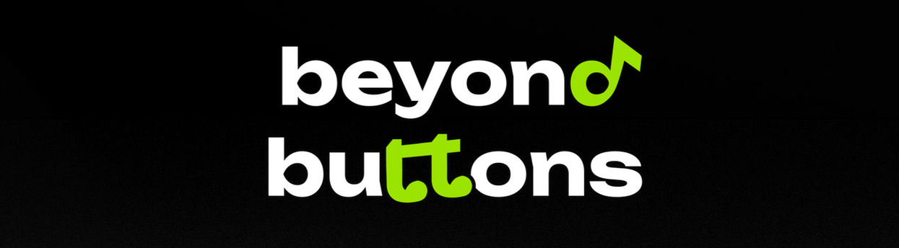
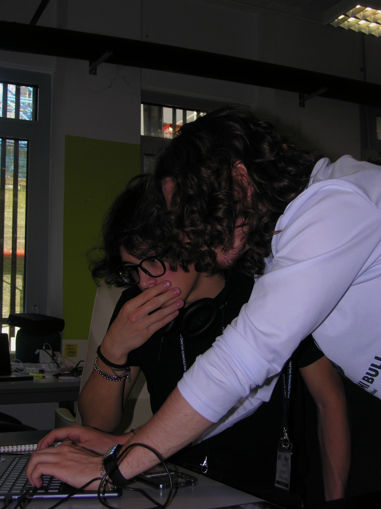
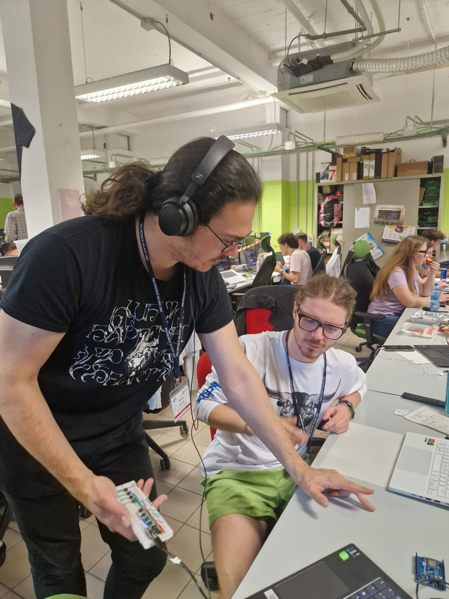
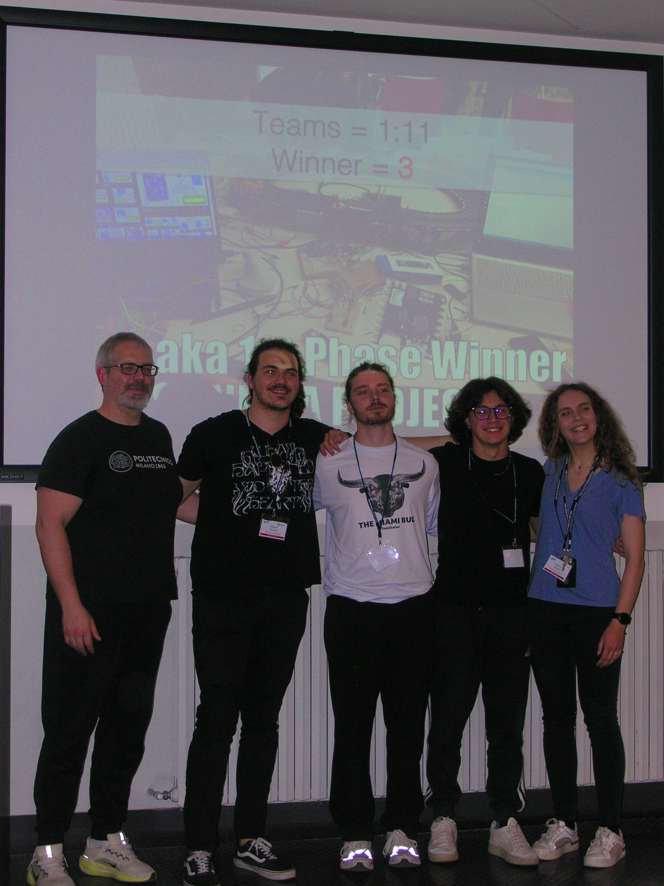

There's music beyond buttons. And that's exactly the idea.
Beyond Buttons is a MIDI controller built during the Creativity, Science and Innovation course at Politecnico di Milano, alongside Pietro Carrucciu and Matteo Minotti. All three of us have a passion for music, and talking about it we kept coming back to the same thing: the gap between playing a physical instrument and working inside a DAW. One feels expressive and alive, the other precise but cold. That conversation turned into a project.
The result is a handheld controller where buttons and body movement work together to shape sound in real time. It won the NECSTLab hackathon at Politecnico di Milano.
A Bosch-sponsored hackathon is where the project was formally introduced and where we took it home with a win. Here are some shots from the event.



The device sits in your hand like a remote control. Eight buttons on top let you play notes like a simplified keyboard. But what makes it interesting is the motion layer: when you tilt, shake, or swing the controller, the onboard IMU sensor picks up those movements and translates them into real-time MIDI parameters — reverb, delay, pitch modulation, whatever you've mapped.
Most MIDI controllers force a choice: you either play an instrument or tweak controls. Beyond Buttons lets you do both at once. The design was inspired by game controllers and TV remotes — things that feel natural in your hand — to keep the learning curve as low as possible.
We also talked to producers like Connor Golden and Chuck Sutton, and the message was clear: a tool like this needs to be fun and intuitive within the first 30 minutes, or people won't stick with it. Default presets for Ableton Live were a core part of the design for exactly that reason.